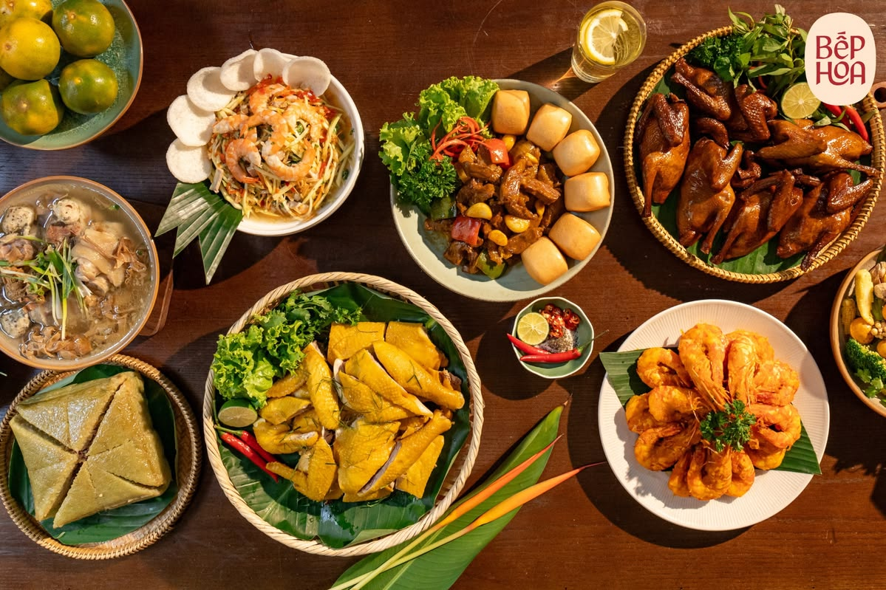

🌄Đông Bắc Bộ
Tày, Nùng, Sán Dìu, Sán Chay, Hoa, Dao, H'Mông, Giáy, Bố Y, Ngái, Lô Lô,Cờ Lao, Pà Thẻn.
🌿Tây Bắc Bộ
Thái, H'Mông, Dao, Khơ Mú, Hà Nhì, La Hủ, Lự, Xinh Mun, Kháng, Mảng, Cống, Si La, La Ha.
🌾Đồng Bằng Sông Hồng
Kinh, Hoa.
🏞️Bắc Trung Bộ
Kinh, Thái, Mường, Thổ, Chứt, Bru - Vân Kiều, Tà Ôi.
☀️Nam Trung Bộ
Chăm, Cơ Tu, Hrê, Co, Gié Triêng, Raglai.
🎶Tây Nguyên
Ê Đê, Gia Rai, Ba Na, M'Nông, Cơ Ho, Xơ Đăng, Chu Ru, Brâu, Rơ Măm, Gié Triêng.
🌴Đông Nam Bộ
Kinh, Hoa, Chơ Ro, Xtiêng.
🚣Đồng Bằng Sông Cửu Long
Kinh, Khmer, Hoa.
Thư viện văn hóa

Lễ hội truyền thống
Những lễ hội đặc sắc của các dân tộc Việt Nam.

Ẩm thực dân tộc
Những món ăn truyền thống mang đậm bản sắc.

Trang phục dân tộc
Trang phục đặc trưng của các dân tộc Việt Nam.

Nhạc cụ dân tộc
Các loại nhạc cụ truyền thống độc đáo.
Dân tộc tiêu biểu
Dân tộc Tày
Dân tộc đông dân nhất trong các dân tộc thiểu số.
Xem chi tiết →
Dân tộc H'Mông
Nổi tiếng với trang phục thổ cẩm rực rỡ.
Xem chi tiết →
Dân tộc Thái
Nổi tiếng với múa xòe và nhà sàn truyền thống.
Xem chi tiết →
Dân tộc Mường
Cư trú nhiều tại Hòa Bình, lưu giữ nhiều nét văn hóa gần gũi với người Việt cổ.
Xem chi tiết →
Dân tộc Khmer
Tập trung ở Nam Bộ, nổi tiếng với các ngôi chùa và lễ hội truyền thống đặc sắc.
Xem chi tiết →
Dân tộc Hoa
Có nguồn gốc từ Trung Quốc, đóng góp lớn vào hoạt động thương mại và văn hóa đô thị.
Xem chi tiết →
Dân tộc Nùng
Sinh sống chủ yếu ở vùng Đông Bắc, giàu bản sắc văn hóa dân gian và nghề thủ công.
Xem chi tiết →
Dân tộc Dao
Có nhiều nhóm địa phương khác nhau, nổi bật với trang phục thêu hoa văn tinh xảo.
Xem chi tiết →
Dân tộc Gia-rai
Một trong những dân tộc lớn ở Tây Nguyên, nổi tiếng với văn hóa cồng chiêng.
Xem chi tiết →
Dân tộc Ba Na
Nổi bật với nhà rông cao lớn và kho tàng sử thi phong phú của Tây Nguyên.
Xem chi tiết →
Dân tộc Chăm
Sở hữu nền văn hóa lâu đời với các tháp Chăm và nhiều lễ hội truyền thống đặc sắc.
Xem chi tiết →
Dân tộc Sán Dìu
Được biết đến với làn điệu hát Soọng Cô và các phong tục văn hóa độc đáo.
Xem chi tiết →
Dân tộc Ra-Glai
Sinh sống ở khu vực Nam Trung Bộ, có nền văn hóa gắn liền với núi rừng và sử thi dân gian.
Xem chi tiết →
×